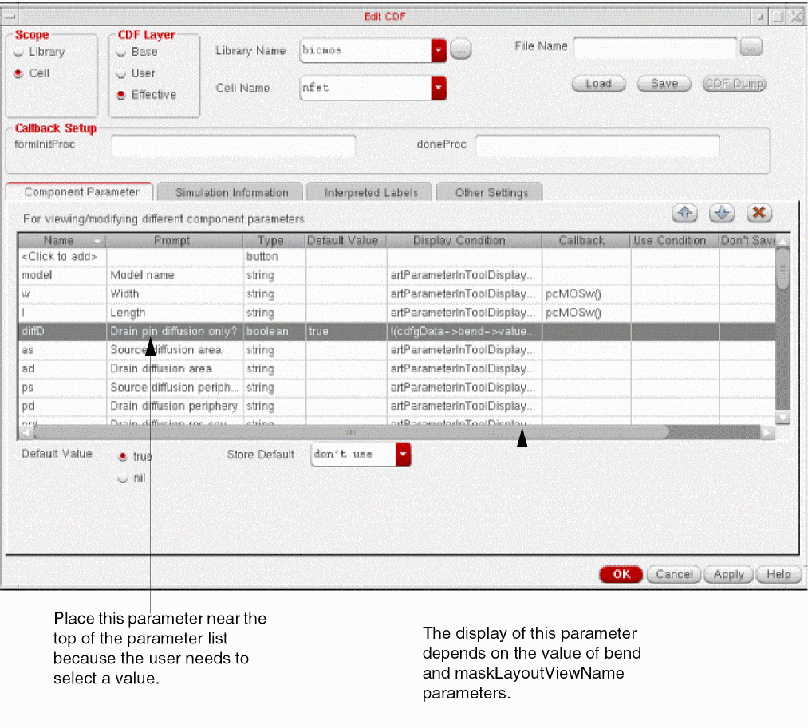

3
Defining Parameters
- Overview
- Component Parameters
- Editing Parameters
- Passing Parameters in a Design
- Parameterized Cells
- Complex Pole Example
- NFET Example
Overview
This chapter describes how to create cell parameters and set parameter attributes.
Each cell has a set of one or more parameters that describe the function of the cell. At any one time, a parameter has one value and a set of attributes. Unlike the value, attributes impose features and limitations on the parameters themselves, independent of their values. For example, the Boolean attribute means that a parameter can have only one of two values. A float attribute requires that the value of the parameter be a floating-point number.
Another attribute can determine whether the parameter value is displayed on a form or in the schematic.
The parameters section of a Component Description Format (CDF) describes what parameters the component has, and the attributes of a component’s parameters. You can describe the value of a parameter using long expressions based on the Analog Expression Language (AEL). These expressions can include mathematical operations and functions that call the value of other parameters. Attribute values are limited to specific values.
When a cell is instantiated into a design, the parameters of that cell become properties.
The difference between a parameter and a property is the following:
- A parameter is a characteristic of a component that has special meaning to the component. Different instances of the same component do not always use the same parameters and almost never use the same values for their parameters.
- A property is how a component parameter is viewed by the Cadence® database when it deals with each instance.
You can set up a hierarchy of CDF descriptions, one overriding the other, because you might want to override specific attributes of some parameters. For example, if you define the xyz parameter on a base-level CDF, you can define the same xyz parameter on the corresponding user-level CDF. Because the user-level description overlays the base-level description, the user-level attributes override the base-level attributes. However, certain parameter attributes, such as the parameter name, cannot be overridden.
Component Parameters
The Component Parameter tab of the Edit CDF form lists all of the parameters defined for the selected CDF description. (Refer to Chapter 2, “CDF Commands,” to learn how to select libraries and cells.) Use the scroll bar on the right side of the tab to view more parameters.
The parameter information is displayed in the columns described in Columns in the Component Parameter Tab . When you select a parameter, additional attributes can be specified for the parameter in the fields that appear in the bottom part of the Component Parameter tab. These fields are described in Fields in the Component Parameter Tab.
The buttons on the top right of the Component Parameter tab allow you to move the selected parameter relative to other parameters, or delete the selected parameter. Alternatively, you can also change the sequence of existing parameters by using the right mouse button. These buttons (and the alternate method to use the right mouse button) are described in Table 3-1.
Columns in the Component Parameter Tab
The following columns are displayed in the table displayed in the Component Parameter tab:
| Column | Description |
|---|---|
|
Displays the parameter name. All parameters must have a name defined, and parameter names cannot begin with a number. Sometimes this name is dictated by the application that uses the parameter.
To add a new parameter double-click where it says |
|
|
Displays the prompt for the parameter. It is useful if you become familiar with parameters from their details in other forms that use the prompt rather than the name. |
|
|
Displays the data type of the parameter. You need to specify data type for every parameter. Valid data types are string, int (integer), float (floating-point number), radio (radio button), cyclic (cyclic field), boolean, button, and netSet. |
|
|
Displays the default value specified for the parameter.
You cannot enter or modify the default values displayed in this column. To specify the default value for a parameter, select the parameter and enter the default value in the Default Value field that appears in the bottom part of the Component Parameter tab.
ADE netlister supports CDF Parameters with values in binary, hexadecimal, octal, and decimal formats. The syntax to specify the value is as follows:
|
|
|
Determines if this parameter is displayed in forms that display CDF parameters, such as the Edit Object Properties form or the Add Instance form. You must enter t, nil, or a SKILL expression that evaluates to t or nil in this field to determine if this parameter is to be displayed. If the field evaluates to non-nil (the default), the parameter is displayed. If the field evaluates to nil, the parameter is not displayed. |
|
|
Specifies a SKILL routine to be executed whenever the value of the parameter changes. The value of this optional field must be a string. Your entry can be the entire function to be executed or a call to a function that is defined elsewhere. If you do not enter anything in this field, the system assumes that there is no callback. The CDF parameter callback is primarily a GUI based callback. GUI based callbacks occur when you modify the values in the parameter form fields. A GUI based callback is active when the CDF parameters are displayed in the Add Instance form or the Edit Object Properties form when you use the Create Instance or Edit Properties commands. For more information on callbacks, refer to Chapter 7, “Writing Callbacks.” |
|
|
Determines if the parameter is to be used. Often, you can enter Cadence SKILL language expression that evaluates to t or nil in this field to determine if this parameter is applicable. When the field evaluates to nil, the system never displays the parameter. When it evaluates to non-nil (the default), then based on the value of Display Condition, the system will display the parameter. |
|
|
Determines if the parameter value is to be saved on the instance. This attribute is for programming use only. Typically, you should set this field to nil and not use it. If the field evaluates to nil (the default), the parameter value is saved as a property on the instance. If the field evaluates to non-nil, the parameter value is not saved as a property on the instance. |
|
|
Allows you to specify a tooltip or description for each parameter. The text specified as description will be displayed on Edit Object Properties, Create Instance form and Property Editor assistants. |
The following fields are displayed in the bottom part of the Component Parameter tab when you select a parameter in the Component Parameter tab. The display of these fields depend on the data type of the parameter. For more information, see Attributes and Parameter Types.
Fields in the Component Parameter Tab
The following columns are displayed in the table displayed in the Component Parameter tab:
Attributes and Parameter Types
Certain attributes are meaningful for some parameter types but not for others. For example, the editable attribute is meaningful for string, integer, and float types, but not for radio.
The following table shows the attributes that are required (req), optional (opt), and unused for each data type. The use attribute is for programming use only (prog). You should set the
dontSave attribute to the default value nil for all parameter types.
| Attribute in UI1 | Attribute in SKILL2 | String | Integer | Float | Radio | Cyclic | Boolean | Button |
|---|---|---|---|---|---|---|---|---|
Editing Parameters
All the parameter attributes descriptions in the previous section apply whether you are using SKILL or the Edit CDF form. The following sections describe how you edit parameters using either method.
Using the Edit CDF Form
You use the Component Parameter tab in the Edit CDF form to edit parameter attributes to test variations in your design. You can also create a new parameter by editing an existing parameter and changing its name. This way, you can use some or all of the parameter attributes from the original parameter.
- Click the Component Parameter tab in the Edit CDF form.
-
Select the parameter you want to edit.
The attributes for the parameter are displayed in the fields that appear in the Component Parameter tab.
- Change the parameter attributes.
- Click Apply to enter the changes.
Using SKILL
You can use SKILL functions to create and modify parameters and their attributes. For details, see CDF SKILL Summary in Virtuoso ADE SKILL Reference.
The following SKILL functions create the parameters for the sample CDF description represented here by the variable cdfDataId.
The first function defines the sample parameter maskLayoutViewName:
cdfParamId = cdfCreateParam(cdfDataId
?type "cyclic"
?name "maskLayoutViewName"
?prompt "Type of layout"
?choices ("layout" "layout.pwr")
?defValue "layout"
?callback "mosLayout( )")
The following functions define the sample parameter width with a callback from the parameter w:
cdfParamId = cdfCreateParam(cdfDataId
?type "string"
?parseAsNumber "yes"
?units "lengthMetric"
?parseAsCEL "yes"
?storeDefault "no"
?name "w"
?prompt "width"
?defValue 7u
?display "artParameterInToolDisplay(’w)"
?editable "cdfgData->maskLayoutViewName->..."
?callback "pcMOSw( )")
The following SKILL functions define the parameters bend and bendt:
cdfParamId = cdfCreateParam(cdfDataId
?type boolean
?name "bend"
?prompt "PCell add bend?"
?defValue nil
?display nil)
cdfParamId = cdfCreateParam(cdfDataId
?type float
?name "bendt"
?prompt "PCell add bend?"
?defValue 0.0
?display nil)
The following SKILL function defines the sample parameter diffD:
cdfParamId = cdfCreateParam(cdfDataId
?type boolean
?name "diffD"
?prompt "Drain pin diffusion only?"
?defValue t
?display "(cdfgData->bend->value) && ...")
Passing Parameters in a Design
In algebraic expressions that define the value of parameters, the pPar, iPar, atPar, and dotPar functions inherit the value of a parameter from a particular instance of the component.
- pPar means parent parameter, NLP (netlist processor) syntax [+name]
- iPar stands for instance parameter, NLP syntax [~name]
- atPar is named after the NLP syntax [@name]
- dotPar is named after the NLP syntax [.name]
The syntax of all four functions is:
_Par("parameter")
You can use these inherited parameter value functions to pass parameters in a design. If you change the value of one parameter, you also change every other parameter whose value is defined by an expression that includes a Par function of the parameter that you changed. Different Par functions can be used in the same expression.
You can define variables by expressions that use any combination of pPar, iPar, atPar, and dotPar. Those functions can reference other variables that are defined by expressions that include one of the Par functions. This chain can continue indefinitely. Circular references generate errors.
pPar
pPar("x") lets you reference the value of parameter x from the parent instance of the component.
An example of pPar used in a parameter definition is
rate = pPar("slewRate") + 100.0
When Analog Expression Language (AEL) evaluates this expression, it searches the parent instance for the value of slewRate and substitutes it into the expression. If it cannot find slewRate on the parent instance, AEL searches the parent cell’s effective CDF for a value for slewRate.
Top-level schematic instances with parameters defined by expressions using pPar follow a special procedure. The netlister first searches the property list of the top-level schematic for a value for the referenced parameter. If it cannot find it, it searches the top-level cell’s effective cell CDF for a default value for the parameter. This value can also be defined with an expression, but that expression can only include the iPar and dotPar functions.
iPar
iPar("x") lets you reference the value of a parameter on the current instance.
Suppose the parameter i12 of a component is defined as a function of its input noise current, n:
i12 = V1/r12 + iPar("n")
The AEL evaluates this expression by searching the current instance for the value of n, which it substitutes into the expression. If the current instance does not have the parameter n, AEL uses the cell’s effective CDF value as a default value for n. Changing the value of n does not have an effect unless you change the value of n on this specific instance.
cap symbol and specify the length as iPar("w") and width as iPar(“l”) you will get a segmentation fault error as this results in infinite recursion. More About iPar and pPar
iPar lets you reference a parameter of an instance in the current schematic cellview, while pPar lets you reference a parameter passed into the schematic.
For example, consider that the current schematic has two parameters called param1 and param2 and an instance I0 on the schematic with three parameters p1, p2, and p3. In this case, you can use iPar and pPar as follows:
p1 = 23*pPar(param1)
p2 = 17
p3 = iPar(p1)+iPar(p2)+pPar(param2)
The above usage results in p1 being equal to 23 times of the current parameter value of param1 passed into the schematic. The parameter p3 is the result of p1 + p2 using the current parameter values of the instance I0, plus the value of param2 of the current schematic.
atPar
The use of atPar is discouraged. Use pPar instead. atPar searches the entire design hierarchy, looking at the parent, grandparent, and great-grandparent of the instance, and so on, until it finds the original value.
If atPar cannot find the parameter value anywhere in the design hierarchy, it then searches the current instance master, which is typically the simulation primitive for the device in a library. If that fails, atPar checks the global block for your simulator (nlpglobals).
dotPar
The use of dotPar is discouraged. It is not supported in several netlist situations.
When trying to evaluate a parameter on a primitive at the bottom level of a design hierarchy, dotPar behaves like iPar. If a property on a component or functional block higher up in the design hierarchy uses dotPar("x") in its definition, dotPar goes down to the bottom of the design hierarchy, searching for x on the leaf instance or primitive currently being output to the netlist.
At the top level of a design, dotPar searches the top-level cellview rather than the instance.
Inherited Parameters in Callbacks
Do not use callbacks based on parameters whose values are defined by expressions that include inherited parameter functions. Changes to the inherited parameters do not trigger the callbacks. Use callbacks only to establish dependencies between parameters whose values are numeric constants.
For example, in a transistor with the length parameter L, L is defined by a callback. Normally, changes in the value of the width parameter W trigger the L callback. The expression for this is
cdfgData -> L -> value = cdfgData -> W -> value
In this example, W is defined by the following expression:
W = pPar("test_width")*10u
If you change the value of test_width, the callback that defines L is not triggered, and the value of L becomes out of date.
Parameterized Cells
Although parameterized cells (Pcells) provide great design flexibility, they also have unique requirements for their CDF descriptions. These requirements include the following.
- When you define Pcell parameters in CDF, ensure that the type of each CDF parameter is consistent with parameter type specified in the Pcell.
-
The default value for CDF parameters that are directly mapped to Pcell stretch parameters must be the same as the minimum value of the Pcell parameter.
If the CDF default value is larger than the minimum Pcell stretch parameter value, when you place a Pcell with a parameter value less than the CDF default value, the Pcell shrinks to the minimum Pcell stretch value. - In layout, Pcells do not understand string variables. All variables must be floating-point numbers if you are using stretch parameters.
- In a schematic, the system places Pcell symbols according to string variables because it must understand expressions (using the Analog Expression Language). Variables are most likely to be strings to allow scaling units (nanometers, micrometers, and so on).
The second and third items might appear to conflict, but you can use one of the two methods to simultaneously support the requirements of layout and schematics.
- Create two CDF parameters. One is a string variable for the schematic instantiation of the Pcell symbol. The other is a floating -point number variable for the Pcell layout view. You must maintain both variables.
- Create a callback for the floating point parameter based on the value of the string parameter. The user enters the string value and both values are set.
Complex Pole Example
Using the same complex pole example from Chapter 2, “CDF Commands,” you should have the Edit CDF form open and selected the Component Parameter tab on the form.
The Component Parameter tab lists all component parameters. For complexPole1, these are sigma, wn, and macro.
Using the Component Parameter Tab
You can examine the different features of the Component Parameter tab using the complexPole1 as an example.
-
In the Component Parameter tab, select the sigma parameter.
The attributes for the parameter are displayed in the fields that appear in the bottom part of the Component Parameter tab.
The parameter name is set to sigma. The prompt used in the Edit Object Properties and Add Instance forms is Sigma. When you are done, you see the parameter name Sigma, but the system keeps track of the parameter by its real name, sigma. The parameter has a Type equal to string. The default value of sigma is -5, so every instance of the complexPole1 in a schematic has this value initially. The Parse as number and Parse as CEL attributes are set to yes (true).
The first two parameters, sigma and wn, are component specific. The third parameter, macro, identifies the file that contains the macro (subcircuit) definition. The default value of macro is the f_cmplxP1 file. Because macro is a CDF parameter, you can change its value to point to another file. This lets you create your own macros and reference them from the Edit CDF form. Editing at this level changes all instances of complexPole1. To change complexPole1 in a particular design, use the Edit Properties command in the schematic editor.
If you want to make changes to the complex pole CDF description, copy the cell to a new library for which you have write access.
The complex pole example continues at the end of the next chapter, where you examine the options available for CDF simulation information.
NFET Example
This section shows you how to use the Edit CDF form to set up parameters and their attributes for the NFET cell. You should have the Edit CDF form open for the NFET cell created in Chapter 2, “CDF Commands.”
The sample NFET component requires a maskLayoutViewName parameter and five parameters needed for the Pcell layout. The following table describes the parameters.
| Parameter | Description |
|---|---|
|
Boolean to control conditional inclusion of shapes for diffusion drain contact versus metal drain contact |
Adding New Parameters
Use the following procedure to add new parameters to the NFET CDF description.
- Click the Component Parameter tab on the Edit CDF form.
-
In the Name column, double-click where it says <click to add>, type
maskLayoutViewName, then press the Tab key.
The maskLayoutViewName parameter is displayed in a new row.
maskLayoutViewName is a cyclic parameter that lets you choose between two layouts. The following figure describes decisions you must make about prompt use, parameter type selection, and callback actions for the maskLayoutViewName parameter for the NFET component.
-
In the Prompt field, type
Type of Layout, then press the Tab key. - In the Type cyclic field, select cyclic.
-
Double-click the Callback field and type
mosLayout(). -
In the Choices field, type the following:
layout layout.pwr - In the Default Value cyclic field in the bottom of the form, select layout.
- In the Store Default, Parse as CEL and Parse as number cyclic fields, select No.
-
Click the
button to move the
maskLayoutViewNameparameter after the parametermas shown below:
- When you are done, click Apply so that your entries take effect.
Setting Sample Callbacks
Because you copied the CDF description for the NFET component from the nbsim CDF description, there is already a width parameter w in the CDF setup for the simulators. You can set up a callback that updates the width parameter whenever the w parameter is updated. Then designers don’t have to enter the width twice.
-
In the Name column, double-click where it says <click to add>, type
width, then press the Tab key. -
In the Prompt field, type
PCell width, then press the Tab key. - In the Type cyclic field, select float.
-
In the Default Value field in the bottom of the form, enter a default value, say
7.0, that matches the default value for the parameter w. -
In the Store Default cyclic field, select don’t use.
The new width parameter does not need to be displayed in forms that display CDF information because the callback sets the value. -
Double-click the Display Condition field and type
nil.
This indicates that thewidthparameter will not be displayed in forms that display CDF parameters.
Because this parameter is set automatically by another parameter, put it near the end of the parameter list. -
Click the
 button to move the
button to move the widthparameter after the parametergeo.
- Click Apply to save the new parameter.
- In the Component Parameter tab, select the w parameter.
-
Double-click the Callback field and type in the callback name
(Refer to Chapter 7, “Writing Callbacks,” for a description of callback procedures.) -
In the Editable Condition field, make the parameter not editable by typing
cdfgData->maskLayoutViewName->value == cdfgData->maskLayoutViewName->defValue
The expression in the Editable Condition field of parameter w controls the designer’s ability to change this parameter. This expression evaluates to nil if the attribute maskLayoutViewName is not the same as its default value. In other words, if the designer selects the layout.pwr view name, this parameter is not editable.
The expression artParameterInToolDisplay('w) in the Display Condition field of parameter w (copied as part of the w parameter from the analogLib library) controls the display of parameters when the user uses the Edit – Properties – Tool Filter command. The expression evaluates to t if this parameter is associated with the tool selected.
You can expand the Display Condition attribute expression. For example, to turn off the display of w whenever the maskLayoutViewName is layout.pwr (instead of making it uneditable), you can use the following:
artParameterInToolDisplay(’w) &&
(cdfgData->maskLayoutViewName->value ==
cdfgData->maskLayoutViewName->defValue)
The function artParameterInToolDisplay takes a parameter name as its argument. It evaluates that parameter in the current CDF description and decides to display it or not, depending on whether the parameter is used by the simulator you are running.
Completing Parameter Definitions
Fill in the required information for the remaining parameters.
-
Repeat the previous procedure for the l and length parameters that you used for w and width as shown in the following figures.
-
Using the Component Parameter tab again, add the parameters bend and bendt as illustrated in the following figure.
The Pcell parameters bend and bendt can also be controlled by the width parameter. You can place both parameters at the bottom of the parameter list because they are driven by the callback and, therefore, do not need to be displayed.
-
Add the diffD parameter as shown below.
The last Pcell parameter is the boolean, diffD, which prompts the designer to specify whether or not to use diffusion to make contact with the drain. The display of this parameter depends on the value of bend and the type of layout selected. If you use layout.pwr, there is no reason to ask about the drain connection. The same is true if you are using a bend.
The complete expression in the Display Condition field is as follows:!(cdfgData->bend->value) && !(cdfgData->maskLayoutViewName->value=="layout.pwr")
You are ready to set the simulation options in the NFET CDF description, which are described in the next chapter.
Attribute name displayed in the Edit CDF form.
Attribute named used in SKILL.
Return to top